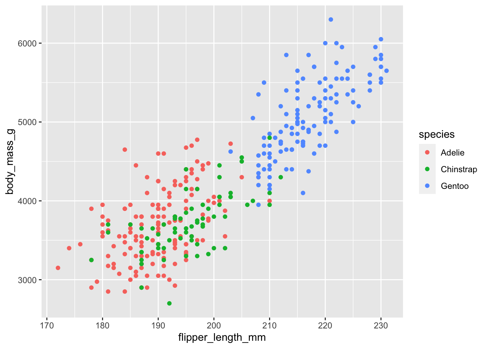

library(tidyverse)
library(palmerpenguins)
library(corrplot)
library(GGally)Notes on Correlation
1 Generic intro
For a generic intro to correlation check the links below:
2 Correlation in R
You can estimate the Pearson or Spearman correlation coefficient between two numerical vectors or matrices with the function cor().
3 Example on Palmer Penguins
Let’s check an example on the Penguins dataset:
Remember the palmer penguins dataset?
penguins# A tibble: 344 × 8
species island bill_length_mm bill_depth_mm flipper_…¹ body_…² sex year
<fct> <fct> <dbl> <dbl> <int> <int> <fct> <int>
1 Adelie Torgersen 39.1 18.7 181 3750 male 2007
2 Adelie Torgersen 39.5 17.4 186 3800 fema… 2007
3 Adelie Torgersen 40.3 18 195 3250 fema… 2007
4 Adelie Torgersen NA NA NA NA <NA> 2007
5 Adelie Torgersen 36.7 19.3 193 3450 fema… 2007
6 Adelie Torgersen 39.3 20.6 190 3650 male 2007
7 Adelie Torgersen 38.9 17.8 181 3625 fema… 2007
8 Adelie Torgersen 39.2 19.6 195 4675 male 2007
9 Adelie Torgersen 34.1 18.1 193 3475 <NA> 2007
10 Adelie Torgersen 42 20.2 190 4250 <NA> 2007
# … with 334 more rows, and abbreviated variable names ¹​flipper_length_mm,
# ²​body_mass_g
# ℹ Use `print(n = ...)` to see more rows3.1 Visualize first
Let’s say that i would like to measure the correlation between the two variables flipper_length_mm and body_mass_g.
Let’s visualize them in a scatterplot first:
penguins %>%
ggplot() +
aes(x = flipper_length_mm,
y = body_mass_g,
colour = species) +
geom_point()Warning: Removed 2 rows containing missing values (geom_point).
Il looks like there’s strong overall correlation between the two variables, which might be weaker in the Adelie species.
3.2 Estimate the correlation coefficient
Let’s estimate the Pearson correlation coefficient with the function cor().
cor(
x = penguins$flipper_length_mm,
y = penguins$body_mass_g,
use = 'pairwise.complete.obs',
method = 'pearson'
)[1] 0.8712018We use the argument use = 'pairwise.complete.obs' to remove observation that have missing values in x or y.
The two variables are highly correlated, with a score of 0.87.
3.3 Stratify by species
We can also use the group_by-summarize paradigm to estimate the same Pearson correlation coefficient, together with the Spearman correlation coefficient, stratified by species.
penguins %>%
group_by(species) %>%
summarise(
pearson_corr = cor(
x = flipper_length_mm,
y = body_mass_g,
use = 'pairwise.complete.obs',
method = 'pearson'
),
spearman_corr = cor(
x = flipper_length_mm,
y = body_mass_g,
use = 'pairwise.complete.obs',
method = 'spearman'
)
)# A tibble: 3 × 3
species pearson_corr spearman_corr
<fct> <dbl> <dbl>
1 Adelie 0.468 0.475
2 Chinstrap 0.642 0.670
3 Gentoo 0.703 0.717The coefficient separated by species are smaller than the one taking all the penguins together. Probably because the trend between body mass and flipper length is conserved across species on a wide range of body mass.
3.4 Correlation matrices
You can use the function cor() to measure the correlation of multiple variable at once, producing a correlation matrix.
For example, if we want to check how each continuous variable in the Palmer Penguins dataset correlates with each other:
cor_mat <-
penguins %>%
select_if(is.numeric) %>%
# let's remove the 'year' variable
select(-year) %>%
cor(use = 'pairwise.complete.obs')
cor_mat bill_length_mm bill_depth_mm flipper_length_mm body_mass_g
bill_length_mm 1.0000000 -0.2350529 0.6561813 0.5951098
bill_depth_mm -0.2350529 1.0000000 -0.5838512 -0.4719156
flipper_length_mm 0.6561813 -0.5838512 1.0000000 0.8712018
body_mass_g 0.5951098 -0.4719156 0.8712018 1.00000004 Useful visual packages
R has a couple (or more) useful packages that let you explore how multiple variables correlate across each other.
4.1 corrplot
corrplot let’s you explore visually correlation matrices.
For example, let’s visualize the correlation matrix that we have stored in the variable cor_mat in the section above.
cor_mat %>% corrplot(diag = FALSE)cor_mat %>% corrplot(method = 'number', diag = FALSE)Don’t take all these correlation values for granted. As we learn in the section caveats on correlation, they might hide some spurious correlation value.
4.2 Pair Plot with GGally
Let’s use the ggpairs() function from the package GGally to explore at the same time the scatterplots and the correlation coefficient.
penguins %>%
select_if(is.numeric) %>%
# let's remove the 'year' variable
select(-year) %>%
# let's drop na's
drop_na() %>%
ggpairs()Find more examples on the R Graph Gallery.
5 Caveats on Correlation
Correlation is a descriptive statistics. When you measure it, you reduce a complex bivariate distribution to a single number. This reductive approach is generally useful, but might be misleading in several cases .
The main caveats to keep in mind are:
- Visualize the distribution. In many specific cases, for example when there are outliers in the dataset, a high correlation scores does not translate into any evident association between the two variables.
- Correlation does not mean causation. Even if two variable strongly correlate, this is no evidence that changes in one variable is causing an effect on the other. Correlation alone might be a hint to causation, but it is in no way at all a proof of it.
‚ö†Ô∏è‚ö†Ô∏è‚ö†Ô∏è For a detailed explanation of the caveats of correlation, check Chapter 19 of the book Introduction to Statistics with R by Rafael A. Irizarry üôèüôèüôè.
6 Exercise
bill_depth_mm and bill_length_mm correlate negatively with a Pearson correlation coefficient of -0.235. Is this correlation true or spurious? Why?
Can you find a stratifying variable that solves this issue?